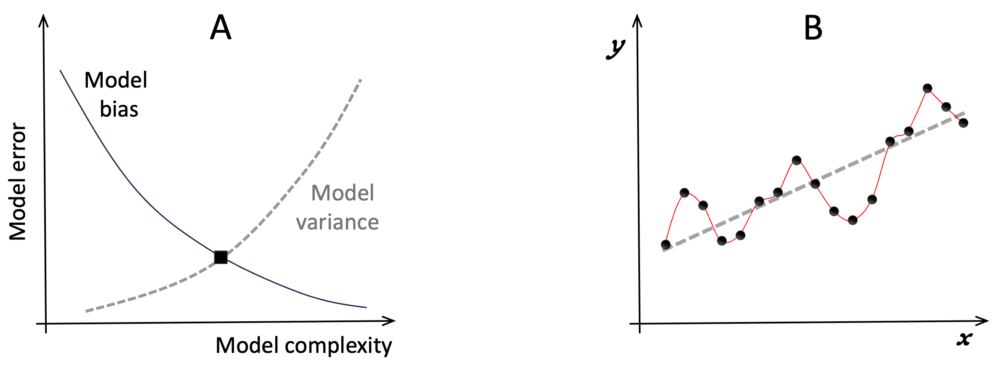

12 Appendix 1: Pioneering Applications of Dynamical Systems Theory to Polarization
Remarkably, applications of systems theory to socio-political polarization go back all the way to the beginnings of systems theory as a distinct discipline. In the early 1930s, Gregory Bateson, son of the prominent British geneticist William Bateson, was trying not to follow in the footsteps of his overbearing father. He decided to put his biology degree aside, and instead took up anthropology 1. In 1935 133, Bateson published a paper putting forward the idea that self-perpetuating cycles of interactions (i.e. positive feedback loops) underlie socio-political polarization 2,3.
During the Second World War, Bateson joined the (US) Office of Strategic Services – the precursor to the CIA – and used his theory to foster socio-political divisions in Japan, Burma, India, and Thailand 134 4. Just before joining the OSS, Bateson attended a gathering at which he learned about the emerging field of cybernetics (the study of feedback loops) 5, and integrated feedback theory and systems concepts into his studies of social conflicts from there on.
In the years since Bateson’s pioneering work, research applying dynamical systems approaches to study polarization has evolved to cover a spectrum of approaches. At one end of this spectrum are thought-leaders who start with the observation that Human Systems are complex, adaptive, dynamical systems, and then apply general principles derived from systems theory to polarization and its challenges. For example, in a ground-breaking 2011 book 6, the conflict-resolution expert Peter Coleman notes that intractable conflicts usually have many causes 135, which are “linked in such a way that they support and reinforce one another”. After further analyses, Coleman concludes that “feedback loops are crucial to the architecture of conflict attractors”. This insight leads him to a new perspective. To resolve “intractable” conflicts, we must focus – not individual causes – but on interactions and relations among the causes.
In his 2021 book updating this approach 7, Coleman goes deeper. Noting that complex dynamical systems tend to settle into stable attractor (steady) states that are hard to dislodge, he recommends resetting the conflict dynamics by moving the leaders and influencers of the conflicting parties out of their usual mental, physical, and social spaces. The idea is to nudge everyone out of the attractor steady state they are trapped in, and then transform the attractor landscape of the problem by introducing new feedback loops favoring resolution and cooperation.
A second stream of systems analysis of polarization models Human Systems as networks where the network nodes are individual participants and links between nodes indicate interactions. Nodes can have one or more values associated with them, representing characteristics of the participants (e.g. their wealth, or left-right political persuasion). Interactions can be directional (e.g. an email is sent from person A to person B), or undirected (e.g. indicating people work together). They can also have an associated strength, and influence recipients in a positive (activating) or negative (inhibiting) manner. Analyses of the structure of such networks, and how information spreads through the network, can then highlight patterns in the population 8, identify changes in the interaction network associated with specific events 9, and infer how critical factors such as risk spread through networks 10.
The above approaches imply and infer system dynamics rather than modeling it explicitly. Game Theory based modeling offers a way to study system steady states, and identify optimal interaction strategies, while keeping the model simple enough to allow analytic solutions. Since Game Theory is already discussed in the main text, and has been widely used to study conflicts 11,12, I will not discuss it further here. But as an example of using Game Theory to shed light on complex dynamics, Vasconcelos et al. 13 combine experiments with modeling to show how segregation can hamper broader, beneficial, coordination.
As discussed in the main text, Game Theory models become increasing difficult to solve analytically as details such as multiple player types, inter-individual variability, and memory of past interactions are added to the model. Simulation models can overcome this challenge in one of two ways. In one approach, (differential) equations are used to describe the behaviors of the players. Computer algorithms then evaluate how the dependent variables in these equations change over time.
Models using differential equations have the great advantage that they are quantitative and fully capture the system dynamics. Also, they are amenable to analysis using sophisticated mathematical methods. For example, Leonard et al. 14 use differential equation modeling to show that
“explanations that do not account for positive feedback cannot account for historical patterns of political polarization
in the US, while Lu et al. 15 show how positive feedback loops can create extreme sensitivity to initial (post-election) conditions.
Equation-based models of large numbers of heterogeneous players can be computationally expensive in both the model-tuning and model-evaluation phases. An alternative approach to simulation-based modeling is to describe each (type of) player algorithmically (e.g. using “if … then …” statements). This approach – called agent-based modeling – is less computation-intensive, and allows for more flexible modeling of interactions 16. In this way, agent-based models can capture the complexity of political and economic systems and provide insights about polarization in real life settings. For example, using a Short-range Activation, Long-range Inhibition (SALI, see main text) model, Robert Axelrod 136 and colleagues show that small changes in the level of intolerance of opposing views can lead to runaway political polarization 17. A potential explanation for this conclusion is provided by another agent based model 18. Delia Baldassari and Peter Bearman find that the structure of the interaction networks changes over time, creating bubbles that facilitate polarization. Results from another agent-based polarization model 19 suggest that tipping points change in the strength of feedback loops arise commonly.
Given the remarkable insights delivered by agent-based and equation-based models, why isn’t everybody using them? Setting aside the issue that many do not have the appropriate expertise, a major challenge is model specification and tuning. How can a model-developer know that they have included all the right interactions in their model? How can they know if they have described the interactions with adequate accuracy? And how can they be sure that small changes to the assumptions underlying their model and its parameters will not substantively change their conclusions? It can be challenging to answer such questions. For example, the Axelrod et al paper I mentioned above was criticized for being “too simple” and therefore “difficult to falsify” 20,21.
Models can be specified at different levels of abstraction, all the way from “rules of thumb” (such as be wary of strangers bearing gifts), through verbal descriptions of causal mechanisms (e.g. lever A, lifts weight B), to formal logic descriptions (e.g. if A and not B, then C), to quantitative formulae such as y = c + m.x (i.e. y is a straight-line function of x).
More flexible model specifications (e.g. verbal descriptions), do not pin down how the model behavior can be verified using data. How much force should be applied to lever A, for it to lift weight B? What constitutes B being lifted? In the statement “if A and not B, then C”, what values of A and B would result in C being true? And what values of C make C true? To be able to compare such models to data, we have to specify parameters such as the minimum amount of force that should be applied to A in order for the statement “if A” to be true.
When models are specified by equations, the parameters are explicitly stated, though their values may not be. For example, in the straight-line model of y as a function of x
\[y = c + m.x\]
c (the point at which the line crosses the vertical axis) and m (the slope of the line) are parameters whose values must be fixed by adjusting them to fit available data.
The bottom line is that no matter how we specify a model, to fit the model to given data, we will need to specify the values of the model’s implicit and explicit parameters. The more complex a model is, the more parameters it will have, and vice-versa.
As explained in Figure A1.1, simpler models can miss more fine-grained patterns in the data, while more complex models can mistake noise in the data for fine-grained features. Many sophisticated statistical measures have been developed to help modelers choose the appropriate level of model complexity given a set of data 22. The catch is that successful use of these methods requires large amounts of data, and considerable expertise. Also, the model selection methods can only choose among candidate models. So, they do not guarantee that the model selected will perform well in absolute terms, or that it will respond with similar accuracy to new data. These factors have so far limited the application of dynamical systems models to polarization. But the picture is changing as the benefits of such modeling become more widely known, and large-scale data collection becomes easier.

Figure A1.1. Uncertainty in modeling. A, models generally trade-off two types of error: bias and variance. Bias refers to the fact that simpler models can only fit broad-brush patterns in data and may fail to capture important, fine-grained characteristics of the system (under fitting). More complex models are more flexible, but risk capturing noise in the data (over-fitting). Models are usually chosen to minimize the combination of bias and variance errors (black square). A cartoon example is shown in Panel B. The horizontal axis represents an independent variable such as time, and the vertical axis a dependent model characteristic of interest. Black disks represent example measurements. Visually, we can see that there is an upward trend in the data. But there may also be some oscillations around this trend-line. Which model should we choose? The more data points we have, the more reliably we can distinguish between random variations and intrinsic patterns. Here, the model producing the dashed straight line, and the one producing the thin red curve that exactly connects all the disks represent two extremes of model complexity. Assuming the data is not noise-free, the model that most closely captures the underlying system would most-likely lie somewhere between these two extremes.
12.1 References
1. Lipset, D. Gregory Bateson: The Legacy of a Scientist. (Prentice-Hall, 1981).
2. Bateson, G. Culture Contact and Schismogenesis. Man 35, 178–183 (1935).
3. Bateson, G. Steps to an Ecology of Mind. (The University of Chicago Press, 1972).
4. Price, D. H. Gregory Bateson and the OSS: World War II and Bateson’s Assessment of Applied Anthropology. Hum. Organ. 57, 379–384 (1998).
5. Heims, S. P. Gregory Bateson and the Mathematicians: From Interdisciplinary Interaction to Societal Functions. J. Hist. Behav. Sci. 13, 141–159 (1977).
6. Coleman, P. T. The Five Percent: Finding Solutions to Seemingly Impossible Conflicts. (Public Affairs, 2011).
7. Coleman, P. T. The Way Out: How to Overcome Toxic Polarization. (Columbia University Press, 2021).
8. Yu, S.-T. et al. Local Network Interaction as a Mechanism for Wealth Inequality. Nat. Commun. 15, 5322 (2024).
9. Minoiu, C. & Reyes, J. A Network Analysis of Global Banking: 1978–2010. J. Financ. Stab. 9, 168–184 (2013).
10. Gai, P., Haldane, A. & Kapadia, S. Complexity, Concentration and Contagion. J. Monet. Econ. 58, 453–470 (2011).
11. Larsen, E. H. Deliberate Nuclear First Use in an Era of Asymmetry: A Game Theoretical Approach. J. Confl. Resolut. 68, 849–874 (2024).
12. Ho, E., Rajagopalan, A., Skvortsov, A., Arulampalam, S. & Piraveenan, M. Game Theory in Defence Applications: A Review. Sens. Basel 22, 1032 (2022).
13. Vasconcelosa, V. V. et al. Segregation and Clustering of Preferences Erode Socially Beneficial Coordination. Proc. Natl. Acad. Sci. 118, e2102153118 (2021).
14. Leonard, N. E., Lipsitz, K., Bizaeva, A., Franci, A. & Lelkes, Y. The Nonlinear Feedback Dynamics of Asymmetric Political Polarization. Proc. Natl. Acad. Sci. USA 118, e2102149118 (2021).
15. Lu, X., Gao, H. & Szymanski, B. K. The Evolution of Polarization in the Legislative Branch of Government. J. R. Soc. Interfce 16, 20190010 (2019).
16. Laver, M. Agent-Based Models of Polarization and Ethnocentrism. (Cambridge University Press, 2020).
17. Axelrod, R., Daymude, J. J. & Forrest, S. Preventing Extreme Polarization of Political Attitudes. Proc. Natl. Acad. Sci. 118, e2102139118 (2021).
18. Baldassarri, D. & Bearman, P. Dynamics of Political Polarization. Am. Sociol. Rev. 72, 784–811 (2007).
19. Macy, M. W., Ma, M., Tabin, D. R., Gao, J. & Szymanski, B. Polarization and Tipping Points. Proc. Natl. Acad. Sci. USA 118, e2102144118 (2021).
20. de Marchi, S. The Complexity of Polarization. Proc. Natl. Acad. Sci. 119, e2115019119 (2022).
21. Axelrod, R., Forrest, S. & Daymude, J. J. Reply to De Marchi: Modeling Polarization of Political Attitudes. Proc. Natl. Acad. Sci. 119, e2202863119 (2022).
22. Hoge, M., Wohling, T. & Nowak, W. A Primer for Model Selection: The Decisive Role of Model Complexity. Water Resour. Res. 54, 1688–1715 (2018).